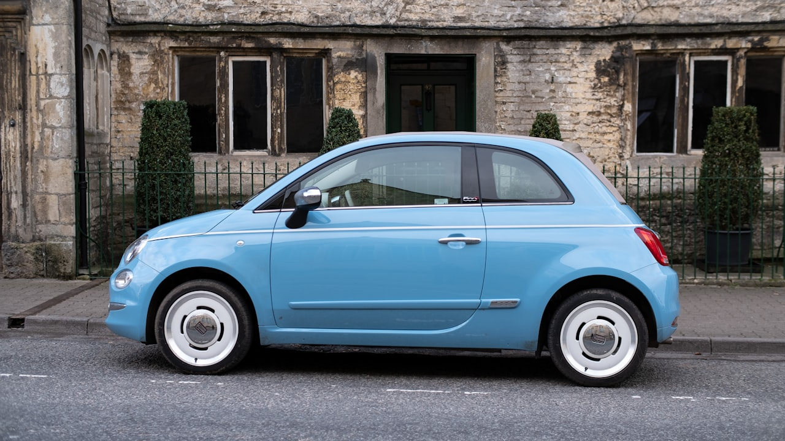

Garanties assurance taxi : le détail qui protege votre activité
Conducteur, RC, TPT, bris de glace, vol, incendie, dommages, véhicule relais, perte d'exploitation, RC pro : comprenez chaque garantie avant de comparer les tarifs. Devis gratuit, rappel rapide.
Pourquoi nous choisir
Chaque garantie expliquee sans jargon, avec ce qui est couvert et ce qui ne l'est pas.
Nous confrontons les offres a postes comparables, pas au seul prix affiche.
Un conseiller mobilité pro pour cadrer franchises, plafonds et attestations TPT.
Comment ca marche
Socle legal TPT, véhicule finance, zone urbaine / aéroport…
Garanties, franchises et exclusions cote a cote.
Devis detaille, sans obligation de souscrire.
Les garanties taxi a connaître avant de signer
Un bon contrat taxi n'est pas seulement « pas cher » : c'est un ensemble de garanties qui protegent votre revenu, vos clients et votre véhicule. Voici le panorama clair des postes à comparer — obligatoire, fortement recommande, ou optionnel selon votre situation.
Chez Leads Opportunities, un courtier ORIAS vous explique chaque ligne à garanties équivalentes, sans jargon inutile.
Obligatoire vs utile : ce que dit vraiment le terrain
La loi impose un socle (RC auto adaptee + usage TPT + couverture professionnelle). Le reste depend de votre véhicule (âge, financement), de votre zone (IDF, aéroports, stations) et de votre tolerance au risque.
Mal dimensionne, un contrat bas de gamme peut couter plus cher qu'une bonne formule des le premier sinistre.
- Socle : RC auto usage taxi / TPT + RC professionnelle
- Fortement recommande : conducteur, bris de glace, véhicule relais
- Selon profil : vol, incendie, dommages, perte d'exploitation
Assurance du conducteur taxi
La responsabilité civile auto protege les tiers, pas le chauffeur. En cas d'accident, vos frais medicaux, pertes de revenus et sequelles restent a votre charge sans garantie conducteur adaptee.
Pour un taxi qui enchaine les stations, aéroports et nuits, cette couverture est souvent le poste le plus sous-estime — et le plus critique pour protéger votre activité.
- Frais medicaux, hospitalisation et reeducation
- Indemnisation des pertes de revenus pendant l'incapacite
- Prejudices corporels et, selon contrat, prejudice moral
- Utile même en cas de tiers non assure ou sous-assure
Que couvre l'assurance conducteur taxi ?
Les dommages corporels que vous subissez au volant, que vous soyez responsable ou non, dans les limites et franchises du contrat.
Pourquoi est-elle si importante pour un taxi ?
Sans elle, un accident responsable peut couper vos revenus pendant des semaines. La RC auto ne vous indemnise pas personnellement.
Que ne couvre-t-elle pas ?
Les dégâts materiels a votre véhicule. Combinez-la avec dommages / tous accidents selon votre besoin.
Conseil LO : verifiez le plafond conducteur et le délai de carence avant de signer — un plafond trop bas ne protege pas un revenu taxi à temps plein.
Responsabilité civile automobile taxi
La RC auto est le socle obligatoire : elle indemnise les dommages corporels et materiels causes a autrui lorsque vous êtes responsable.
Sans elle, pas de circulation légale, pas d'attestation pour les contrôles, et un risque financier potentiellement ruineux.
- Dommages corporels aux tiers (pietons, cyclistes, passagers d'un autre véhicule…)
- Dommages materiels (autres véhicules, biens, infrastructures)
- Conformité légale et exigences de la police des taxis
La RC auto suffit-elle pour exercer en taxi ?
Non. Elle est nécessaire mais incomplete : il faut une couverture explicite transport de personnes à titre onéreux (TPT) et, le plus souvent, une RC pro.
Que ne couvre pas la RC auto ?
Vos propres blessures et les dommages a votre véhicule en cas d'accident responsable.
Conseil LO : exigez une attestation mentionnant clairement l'usage taxi / TPT — une auto particuliere est refusee en contrôle.
Transport de personnes à titre onéreux (TPT)
L'assurance taxi doit obligatoirement couvrir l'usage du véhicule en transport de personnes à titre onéreux. Sans cette mention, le contrat peut être inopposable en sinistre.
En contrôle (police des taxis), l'attestation TPT et la RC pro doivent être presentables. C'est un point non negociable avant de prendre la route.
- Mention explicite TPT / usage taxi sur le contrat
- Attestation nominative à jour à conserver a bord
- Compatibilite avec ADS / licence et zone d'exercice
Pourquoi le TPT change tout ?
Une auto « particulier » ne couvre pas les courses remunerees. En sinistre, l'assureur peut refuser la prise en charge si l'usage pro n'est pas declare.
Que présenter en contrôle ?
Attestation TPT et attestation RC pro, à jour et nominatives. Demandez-les systematiquement à chaque avenant.
Conseil LO : verifiez que l'attestation cite bien taxi / TPT et non seulement « usage professionnel » generique.
Responsabilité civile professionnelle taxi
La RC pro couvre les dommages causes a des tiers dans le cadre de votre activité professionnelle, au-dela de la seule circulation (ex. bagage tombe sur un client).
Elle est au coeur du cadre legal du transport de personnes à titre onéreux et des contrôles d'activité.
- Dommages lies a l'exercice de l'activité taxi
- Plafonds de garantie à vérifier ligne a ligne
- Defense / recours selon contrats
RC auto et RC pro : quelle différence ?
La RC auto traite l'accident de circulation. La RC pro couvre le risque professionnel du métier (cadre d'activité, obligations specifiques).
Que vérifier avant de signer ?
Plafonds corporels, exclusions, territorialite, et compatibilite explicite avec l'activité taxi.
Conseil LO : demandez une attestation RC pro nominative et à jour — utile pour les contrôles et les renouvellements de documents.
Bris de glace véhicule taxi
Gravier, vandalisme, choc de portiere : le bris de glace est un classique sur les parcours urbains, gares et aeroportuaires.
Un pare-brise fissure, c'est aussi un risque contrôle technique / sécurité passagers et une immobilisation evitable.
- Pare-brise, vitres laterales, lunette arriere (selon contrat)
- Parfois optiques et toits vitres — a vérifier explicitement
- Franchise souvent plus basse que sur un sinistre collision
Pourquoi la prioriser en taxi ?
Le kilométrage eleve et le stationnement urbain multiplient les impacts. Remplacer un pare-brise sans garantie peut manger plusieurs jours de courses.
Comment se passe l'indemnisation ?
Declaration, photos, puis reparation ou remplacement via reseau agree. Demandez si la franchise est reduite en reparation (vs remplacement).
Conseil LO : comparez franchise reparation vs remplacement — sur un eclat, reparer revient souvent moins cher.
Garantie vol véhicule taxi
Le véhicule est votre outil de production. Un vol (ou une tentative) stoppe net l'activité et peut entrainer des frais lourds.
La garantie vol indemnise sous conditions (effraction, plainte, mesures de prevention prevues au contrat).
- Vol total du véhicule
- Tentative de vol avec traces d'effraction
- Vol partiel (roues, retroviseurs, équipements) selon contrat
Quelles conditions pour être indemnise ?
En général : dépôt de plainte, indices d'effraction, declaration rapide, et respect des mesures de sécurité exigees (alarme, garage…).
Que faire immediatement ?
Plainte, puis declaration a l'assureur avec photos et inventaire. Demandez si un véhicule relais est prevu.
Conseil LO : en grandes villes, le stationnement de nuit pese lourd au tarif — declarez-le honnetement pour éviter un litige.
Garantie incendie véhicule taxi
Incendie accidentel, malveillance, foudre ou explosion : les dommages peuvent être totaux et immobiliser le véhicule longtemps.
Cette garantie protege l'outil de travail sur ces événements majeurs, dans les limites du contrat.
- Incendie (accidentel ou criminel selon clauses)
- Foudre et dommages électriques associes
- Explosion
Comment se passe l'expertise ?
Un expert evalue le coût des reparations. Au-dela d'un seuil, l'assureur peut proposer une indemnisation pour perte totale.
Véhicule relais ?
Selon options : verifiez durée, categorie et franchise avant de souscrire.
Conseil LO : conservez les preuves d'entretien — utiles si l'assureur interroge l'origine du sinistre.
Dommages tous accidents et vandalisme
Collision responsable, sortie de route, vandalisme sur parking ou en station : ces garanties couvrent les dégâts a votre propre véhicule au-dela de la seule RC.
Pour un taxi recent ou finance (LOA/LLD), elles sont souvent indispensables pour protéger la valeur residuelle.
- Dommages tous accidents (y compris responsable)
- Vandalisme et actes de malveillance
- Franchise et valeur a neuf / valeur a dire d'expert à comparer
Tous risques = zéro franchise ?
Non. Verifiez toujours le montant de franchise et les exclusions (usure, negligence, usage non declare…).
LOA / LLD : attention
Le bailleur exige souvent une formule etendue. Un trou de garantie peut vous laisser redevable du solde.
Conseil LO : sur un véhicule finance, alignez la formule sur les exigences du contrat de location avant de chercher le prix le plus bas.
Véhicule relais pour taxi
Quand le taxi est immobilise après sinistre ou panne, un véhicule relais permet de poursuivre l'activité sans interruption totale de chiffre d'affaires.
Durée, categorie de véhicule et conditions d'attribution varient fortement d'un contrat a l'autre — a comparer avant de signer.
- Véhicule de remplacement pendant reparations
- Durée maximale et délai de mise a disposition
- Categorie / cylindree adaptees a l'usage taxi (selon offres)
Véhicule relais vs indemnite d'immobilisation ?
Le relais limite l'arret d'activité. L'indemnite compense le manque à gagner si aucun prêt n'est possible ou insuffisant.
Point de vigilance
Certains contrats excluent les véhicules utilises en TPT du pool de remplacement. Exigez une clause compatible taxi.
Conseil LO : demandez par écrit si le véhicule relais est autorise en usage taxi / TPT — c'est le piege le plus frequent.
Indemnite d'immobilisation / perte d'exploitation
Quand le véhicule est immobilise après sinistre, vos revenus chutent. Une indemnite d'immobilisation (ou perte d'exploitation) vise à compenser une partie de ce manque à gagner.
Montant journalier, durée max et délai de franchise (jours non indemnises) font toute la différence.
- Indemnite journaliere plafonnee
- Durée maximale d'indemnisation
- Délai de carence / franchise en jours
Comment estimer le besoin ?
Basez-vous sur votre CA moyen journalier net de charges variables, puis comparez aux plafonds proposes.
Avec ou sans véhicule relais ?
Les deux se completent : le prêt limite l'arret, l'indemnite couvre le manque à gagner residuel.
Conseil LO : une indemnite trop basse (ou avec 7 jours de franchise) peut être inutile pour un taxi a fort rythme.
Trois questions qui font basculer un contrat taxi
Avant de signer, posez ces trois points a votre courtier ou a l'assureur. Les réponses evitent la plupart des mauvaises surprises.
- L'usage taxi / TPT est-il explicitement garanti sur l'attestation ?
- Quelles franchises s'appliquent sur bris de glace, collision et vol ?
- Que se passe-t-il si le véhicule est immobilise 10 jours (relais, indemnite, plafonds) ?
Erreurs fréquentes à éviter à la souscription
Sous-estimer ses besoins (formule economique sans vol, incendie ou bris de glace) et oublier de declarer l'historique ou l'usage exact sont les deux pieges les plus coutueux.
Tout oubli peut entrainer une nullite ou une réduction de garantie en cas de sinistre. Un courtier ORIAS aide à monter un dossier complet des le devis.
- Declarer honnetement sinistres, bonus/malus et stationnement
- Exiger la mention TPT / taxi sur chaque attestation
- Comparer à garanties équivalentes, pas au seul prix affiche
Questions fréquentes
Quelles garanties sont obligatoires pour un taxi ?
Au minimum une RC auto adaptee a l'activité avec usage TPT, et une couverture professionnelle (RC pro). Les attestations doivent être presentables en contrôle.
Puis-je rouler avec une assurance auto particuliere ?
En général non pour une activité taxi declaree. L'usage transport de personnes à titre onéreux doit être explicitement garanti.
Comment obtenir un devis garanties incluses ?
Via notre landing taxi : un conseiller ORIAS vous rappelle pour caler les postes (conducteur, TPT, bris de glace, véhicule relais…) selon votre profil.
Quelle différence entre RC auto et RC pro ?
La RC auto couvre les dommages aux tiers en circulation. La RC pro couvre le risque lie a l'exercice professionnel du transport de personnes.